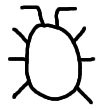

FindBugs - A Bug Pattern Detector for Java
This is the web page for FindBugs, a program which looks for bugs
in Java code. It is free software, distributed under the terms
of the Lesser GNU Public License.
FindBugs requires JRE (or JDK) 1.4.0 or later to run. However, it
can analyze programs compiled for any version of Java.
Downloads
The current release is @VERSION@:
You can also browse a list of all releases.
Please note that FindBugs is alpha-quality software. You may find bugs in it,
and the features and source code may change significantly in future releases.
Having said that, we invite you to try it out, and especially
send us feedback.
Documents
Changes since last version
Changes since version 0.6.0:
- New bug pattern detector which looks for places where a
null pointer might be dereferenced
- New bug pattern detector which looks for IO streams that are opened,
do not escape the method, and are not closed on all paths out of the method
- Command line interface can save bugs as XML
- GUI can save bugs to and load bugs from XML
- An "Annotations" window in the GUI allows the user to add
textual annotations to bug reports; these annotations are preserved
when bugs are saved as XML
- In this release, the Japanese bug summary translations by
Germano Leichsenring are really included (they were inadvertently
omitted in the previous release)
- Completely rewrote the control flow graph builder, hopefully
for the last time
- Simplified implementation of control flow graphs, which should reduce
memory use and possibly improve performance
- Improvements to command line interface (list bug priorities, filter by priority,
specify aux classpath, specify project to analyze)
Older versions...
Contributing
If you have a bug fix or feature enhancement you would like to contribute,
we would be happy to consider it for inclusion. Just send a patch
(be sure to use the "-u" or "-c" option to diff) or send the source files you've
modified to daveho@cs.umd.edu.
Resources
There are two mailing lists for FindBugs.
Send comments to daveho@cs.umd.edu